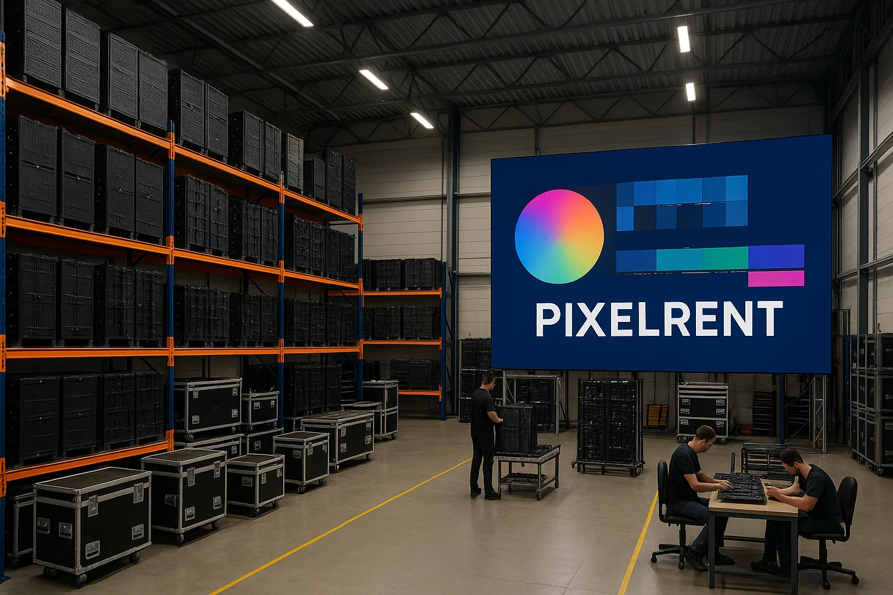

By Cassie
What does an Angola LED display importer need to know? Importing LED displays into Angola means clearing a pre-shipment conformity inspection, a CNCA loading certificate, and customs at Luanda. This 2026 guide explains the PVoC programme, the clearance documents, duty and VAT, and the specification points that matter in a tropical climate.
Angola is one of the larger import markets in southern Africa, with demand for LED displays from banks, retail chains, telecoms, oil and gas operators, and government projects. Most of that demand is met by imports, and Luanda remains the main gateway for container cargo.
An Angola LED display importer who arranges the pre-shipment inspection and the loading certificate before the ship sails clears cargo without difficulty. The two documents that cause the most delay are the conformity certificate and the CNCA certificate, both of which are issued against the shipment before departure.
Customs clearance is administered by the Angolan tax authority, the Administracao Geral Tributaria, through the electronic single window. The importer needs a tax identification number, a customs registration, and a licensed clearing agent to lodge the entry.
Angola requires a loading certificate issued through the Conselho Nacional de Carregadores, the CNCA. This certificate, also known as an ECTN, is issued against the bill of lading and must be in place before the cargo arrives. A consignment that arrives without it cannot be cleared.
| Step | What Is Required | Who Handles It |
|---|---|---|
| Tax and customs registration | Tax number and importer registration | Importer |
| Pre-shipment inspection | Conformity verification at the loading point | Supplier and inspection body |
| CNCA loading certificate | Certificate against the bill of lading | Importer and agent |
| Customs declaration | Entry through the electronic single window | Clearing agent |
| Duty and VAT payment | Duty plus value added tax | Importer |
| Port release | Terminal handling at Luanda | Clearing agent |
Sequence the documents correctly. The conformity inspection happens at the factory or the loading port, the CNCA certificate is raised against the shipment, and the customs entry is lodged on arrival. Starting any step late pushes the whole chain back by a week or more.
Angola operates a pre-shipment verification of conformity programme, commonly called PVoC. Regulated products must be inspected and certified in the country of export before shipment, and the certificate issued by the appointed inspection body is presented at clearance.
The programme is administered on behalf of the Angolan authorities by appointed inspection agencies working through an online verification portal. The exporter submits the test reports, the invoice, and the packing list, and the body verifies the goods against the applicable standard, with a physical inspection where required.
| Requirement | What It Covers | Evidence to Hold |
|---|---|---|
| PVoC certificate | Pre-shipment conformity for the consignment | Certificate issued before shipment |
| Product standards | Safety and performance of the equipment | Test reports |
| Electrical safety | Insulation, earthing, protection | Safety test report |
| Electromagnetic compatibility | Emissions and immunity | EMC test report |
| Technical file | Datasheets, drawings, labels | Product documentation |
| Labelling | Ratings and origin marking | Label photos and artwork |
Confirm that the certificate is issued for the exact consignment and the exact model. A certificate that covers a different quantity or a different cabinet will not be accepted at the port, and the correction cannot be made once the goods have sailed.
Angola charges customs duty on the customs value of the goods and value added tax at the standard rate on the duty-paid value. The customs value is built from the goods, the freight, and the insurance, and the entry is lodged in the local currency at the prevailing rate.
| Cost Element | Basis | Comment |
|---|---|---|
| Customs duty | Tariff rate on the customs value | Rate depends on the tariff line |
| Value added tax | Standard rate on duty-paid value | Recoverable for registered businesses |
| CNCA certificate fee | Fixed charge per shipment | Arrange before sailing |
| Port charges | Terminal handling and storage | Luanda rates are significant |
| Clearing agent fee | Per entry or percentage | Agreed in advance |
| Inland transport | Port to site | Road condition matters |
Port storage at Luanda is expensive, so the cost of a documentation delay is far higher than the cost of the certificate itself. Budget the certification and agent fees at the order stage rather than treating them as a surprise on arrival.
Clearance in Angola is handled by a licensed despachante, a customs clearing agent registered with the tax authority. The agent lodges the entry, presents the PVoC and CNCA documents, and manages the terminal formalities at the port.
Ask the agent to review the draft documents before the goods are loaded. An experienced agent will catch a mismatch between the invoice, the packing list, and the certificate while the goods are still at the factory, when the fix is cheap.
| Agent Task | What Good Looks Like | Warning Sign |
|---|---|---|
| Document review | Checks before sailing | Checks after arrival |
| Tariff advice | Written code proposal | One code for the whole shipment |
| Terminal handling | Attendance at the port | Handled remotely with no update |
| Cost estimate | Itemised landed cost | A single guessed number |
| Communication | Scheduled updates | Contact only when a problem arises |
| Records | Copies of every entry and receipt | No paper trail |
Agree the fee structure in writing before the first shipment, and require copies of every receipt. Clearing costs in Angola are a material part of the landed cost, and an itemised account is the only way to control them.
Angola has a tropical climate with a rainy season and a dry season, high humidity along the coast, and significant heat inland. Outdoor screens face intense rain, high humidity, and strong ultraviolet exposure, while coastal sites face salt-laden air.
For Angolan sites, humidity and salt-laden coastal air make sealed cabinets the deciding factor: the COB EF outdoor series (IP65, 3000 nits) and the COB ZH touring series (sealed, 3400–4000 nits) are built for exactly this duty.
| Condition | Risk | Specification Response |
|---|---|---|
| Heavy seasonal rain | Water ingress into cabinets | High ingress rating and drainage |
| High humidity | Condensation and corrosion | Conformal coating and desiccant |
| Coastal salt air | Corrosion of frames and connectors | Corrosion-resistant hardware |
| High ultraviolet | Fading of plastics and seals | UV-stable materials |
| High ambient heat | Thermal derating | Adequate cooling and derating |
| Grid instability | Driver stress and faults | Wide-range power supply |
For a coastal or port site, specify corrosion-resistant hardware for the frame and the connectors and confirm the ingress rating in writing. For an inland site, the priority shifts to thermal performance and dust management, since the dry season carries a great deal of airborne material.
Power supply quality is a practical issue for many Angolan sites, so specify drivers and power supplies with a wide input range and consider surge protection at the cabinet. Sensitive control equipment benefits from a dedicated circuit rather than a shared distribution board.
Ask every candidate the same questions and keep the written answers. For an Angolan project the conformity documentation, the ingress rating, and the spare parts arrangement matter as much as the price per square metre.
| Question | What a Strong Answer Looks Like | Warning Sign |
|---|---|---|
| Pre-shipment support | Handles the inspection at the factory | Leaves it to the buyer |
| Ingress rating | Stated IP rating in writing | Vague weatherproofing claim |
| Corrosion treatment | Specified frame and hardware finish | Not addressed |
| Spare parts | Stated period and list | No commitment |
| Service response | Stated time by fault severity | Answer avoided |
| References | Projects in tropical markets | Logo list without contacts |
Confirm the components in writing and require written approval for any substitution. In a humid tropical installation, a quietly changed power supply or connector is the difference between a screen that lasts and one that fails in the first rainy season.
Every one of these mistakes is cheaper to fix before the goods are loaded than after they arrive at Luanda. An Angola LED display importer who books the inspection early, raises the CNCA certificate in good time, and specifies for humidity clears cargo smoothly.
Asia Vision Technology manufactures LED displays in Shenzhen and supplies importers, distributors, and contractors across Africa. The factory prepares the technical file and test reports the PVoC inspection requires, and it handles the pre-shipment inspection at its own premises.
For Angolan projects the company supplies outdoor cabinets with high ingress ratings and corrosion-resistant hardware, rental systems for events and exhibitions, and fine pitch screens for retail, banking, and control rooms. OEM and ODM production is available for distributors building their own range.
